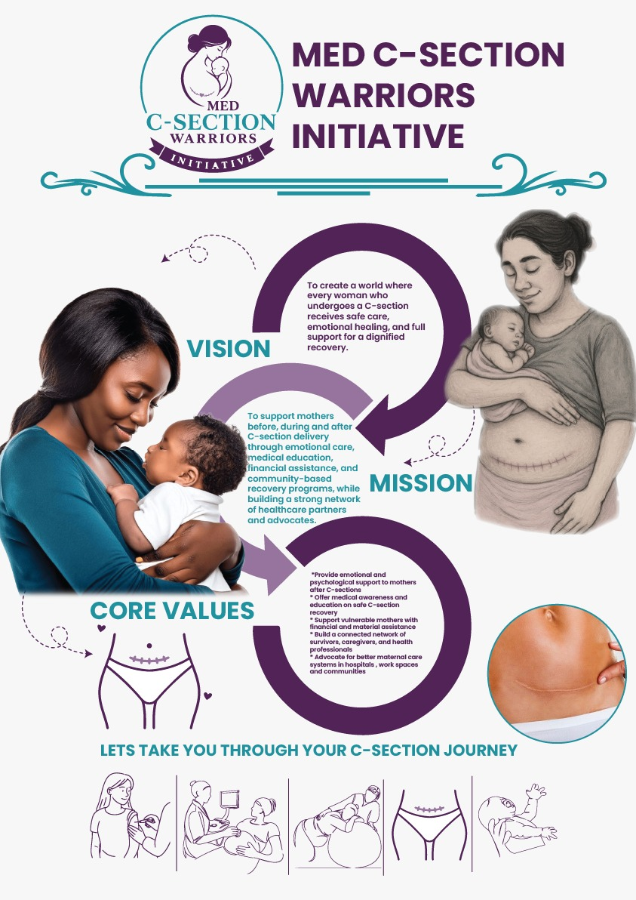

Our story
MED C-Section Warriors Network began as a grassroots response to the gaps many women experience after cesarean birth. We noticed the need for a trusted community that could guide healing, share knowledge, and create pathways for advocacy.
About the network
We advocate for women whose birth stories deserve respect, care, and ongoing support.
MED C-Section Warriors Network began as a grassroots response to the gaps many women experience after cesarean birth. We noticed the need for a trusted community that could guide healing, share knowledge, and create pathways for advocacy.

A world where every mother who experiences a Caesarean birth is respected, supported, empowered, and celebrated throughout her journey of motherhood.
To improve the quality of life of mothers who undergo Caesarean births through advocacy, education, emotional wellness, healthcare partnerships, financial empowerment, research, and community support while promoting respectful maternal healthcare for all.
Compassion, evidence-based care, inclusion, empowerment, and service.
Our founder turned personal pain and professional insight into a movement. Her commitment to women’s healing and leadership continues to shape every program we offer.